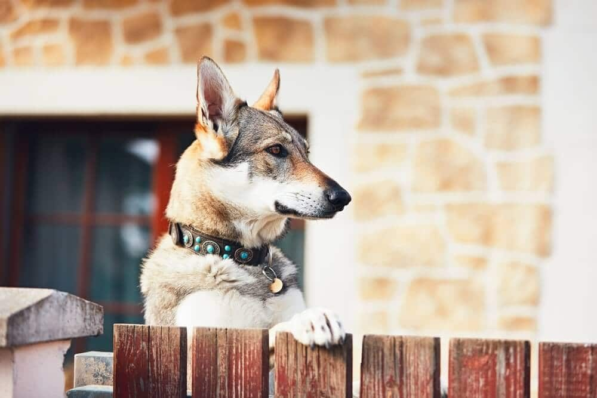
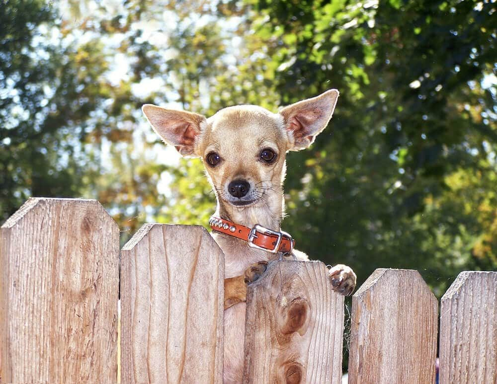

In This Guide
- The best dog fence depends on your dog's size, energy, and habits, plus your yard, budget, and local rules.
- Ten common options range from chain link and wood privacy fences to metal, vinyl, wire panels, and portable pens.
- Diggers, jumpers, and climbers each need a different fix, such as a buried barrier, more height, or a smooth face with no footholds.
- Gates and latches are the usual escape route, so check them as carefully as the fence itself.
A good dog fence keeps your dog safe, keeps the yard usable, and lets you open the back door without a second thought. The right one depends on the dog, the yard, and the person who owns both. A fence that suits a calm senior dog can be useless for an athletic young one.
This guide from Big Easy Fence covers ten common dog fence options, then looks at the habits that cause most escapes: digging, jumping, climbing, and slipping through gates. It sticks to advice that holds for dogs in general, since individual dogs vary a lot even within a breed.
What to Weigh Before You Choose
Start with the dog, then the yard. These are the factors that shape the decision.
- Size and build. Big, strong dogs test a fence in ways small dogs do not, and tiny dogs can squeeze through gaps that a larger dog could never use.
- Temperament and habits. A dog that digs, jumps, barks at passersby, or chases things needs a different fence than a relaxed dog.
- Budget. Materials range widely in cost, and upkeep adds to it. See how to save money on a fence for ways to keep the total in check.
- Local rules. Cities, parishes, and homeowners associations often set limits on fence height, material, and placement.
- Privacy and looks. Some owners want a solid fence, others want to see through it.
- Durability and weather. Rain, humidity, and heat wear on wood and metal in different ways, so pick something that will last in your yard.
Ten Dog Fence Options
1. Chain-Link Fences
Chain link is one of the more affordable ways to enclose a yard, and it goes up quickly. It lets your dog see the neighborhood, and it keeps small animals and critters out as well. Vinyl-coated versions resist rust and look better than bare steel. Ask for a smooth top edge so nothing sharp sits at the height of a curious dog.
2. Wood Privacy Fences

A solid wood fence protects your dog and your property, and it blocks the outside view so your dog has less to react to. It suits many dogs and many yards. The tradeoff is upkeep: wood needs sealing or staining, and boards need repair over time. Some owners add a slotted panel or small window so a dog that likes to watch can still see out.
3. Vinyl Privacy Fences
Vinyl offers the same solid privacy with less maintenance. It does not rot and comes in many colors and styles, and it is a good pick if you want a long-term fence that needs only washing. It costs more up front than wood or chain link, so weigh it against the years of upkeep it saves.
4. Metal Fences
Aluminum and steel metal fences are strong, low maintenance, and attractive, and wrought iron adds a classic look. They are usually among the higher-priced choices. Check the spacing between bars, because a small dog or puppy can slip through wide gaps, and think twice about pointed tops if your dog tends to jump.
5. Picket Fences
A traditional picket fence looks great and gives a sense of enclosure. Because most are low, they suit small, calm dogs that do not jump or climb. Bigger or more athletic dogs can clear a low picket fence, and the fence still needs regular painting, staining, or sealing.
6. Welded Wire Panels
Welded wire fencing on sturdy posts is a simple, budget-friendly way to enclose a yard or a garden bed. Choose a heavy gauge wire with small openings. Thin chicken wire is not strong enough for most dogs, since it bends and tears under pressure.
7. Short Panel Fences for Small Dogs

Low panels of vinyl or wood can work for small dogs that do not jump, leap, or climb. They use less material and less labor, which keeps the cost down. Keep the spacing between slats narrow so a small dog cannot slip through, and set the panels firmly so a determined dog cannot push them aside.
8. Portable Pens
Freestanding pens are easy to set up, take down, and move around the yard. They are handy for puppies, for travel, and for short-term needs. They are not a substitute for a secure permanent fence, and a strong dog can knock one over.
9. Electronic Containment
Some owners use a buried wire or wireless system with a collar that signals the dog when it nears a set boundary. It leaves the view open, but it is not a physical barrier. It will not stop other animals or people from entering, and it needs consistent training. It works better for some dogs than others, so ask a trainer or a veterinarian whether it fits your dog.
10. Patio and Garden Enclosures
A small fenced section by the patio or around a garden bed gives your dog a safe spot to relax while you are outside, or keeps it out of the flowers. It can be built from the same materials as the rest of your fence so it blends in.
Fixing the Habits That Cause Escapes
Diggers
Some dogs dig along a fence line, and a fence that only sits on top of the ground will not stop them. A deeper footing, a concrete curb, or a strip of wire laid flat and buried along the base makes digging harder. Wire fencing and chain link are both easy to pair with a buried barrier, and a well-set wood fence can be given a footing too.
Jumpers and Climbers
Height is the first fix. Many dogs are stopped by a solid 6-foot fence with tight boards, since a smooth, solid face gives a dog little to grab. Watch for footholds: horizontal rails on the dog side, stacked planters, woodpiles, or furniture near the fence can all give a boost. Some dogs also climb chain link, so consider a taller fence or a topper.
Barkers and Fence Runners
What your dog can see matters. A solid fence removes visual triggers for dogs that bark at people and traffic, though some dogs get bored without something to watch. A see-through fence lets a dog keep an eye on the street, which some dogs love and others find too stimulating. Try to match the fence to your dog's personality.
Gates and Latches
Gates are the most common escape route. Use a self-closing hinge and a latch that a dog cannot lift with a nose or paw. Check that there is no wide gap under the gate, and keep it in good repair so it does not sag.
Choosing With Your Dog in Mind
There is a fence that works for almost every dog and every budget. Look at the dog first, then at the yard, and then at what upkeep you are willing to do. A fence that is strong, well built, and easy to keep in good shape will serve you both for years. If you are ready to plan yours, our residential fencing services are a good place to start, and a free estimate will show what each option costs for your yard.
Need a Secure Fence for Your Dog?
Tell us about your dog and your yard, and we will suggest a fence with the height, gate, and finish that fit.